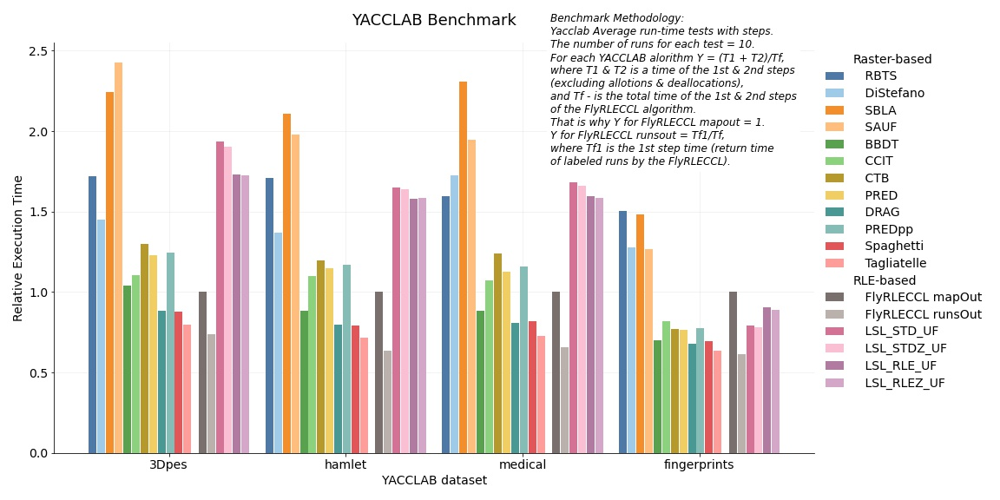
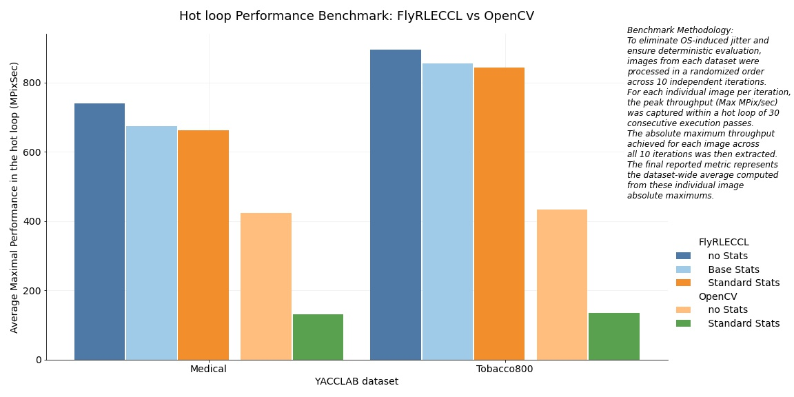
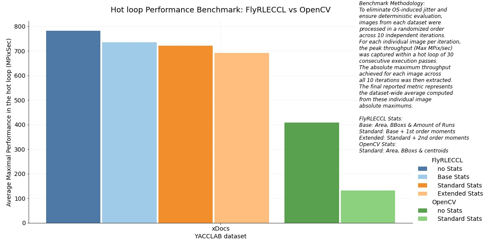

5-6× Faster than OpenCV in WithStats Mode.
C99. Zero Allocations. Zero Dependencies.
Complete & Flexible Determinism.
FlyRLECCL is a production-ready, dependency-free C99 SDK engineered specifically for mission-critical embedded vision, smart cameras, medical imaging, and high-throughput document processing. It replaces bloated, non-deterministic frameworks with a hyper-optimized, single-pass RLE engine.
The Core Value: Why Technical Buyers Choose FlyRLECCL
When integrating Connected Component Analysis (CCA) into real-time production systems, modern engineering teams face a strict trade-off between throughput and memory reliability. FlyRLECCL eliminates this compromise.
Hardcore Performance vs. OpenCV (WithStats)
Tested on industry-standard benchmarks (YACCLAB and Tobacco800 datasets), FlyRLECCL drastically reduces CPU cycle consumption:
- Medical Dataset: 5.0× faster than OpenCV
cv2::connectedComponentsWithStats - Tobacco800 Dataset (Documents): 6.2× faster than OpenCV
cv2::connectedComponentsWithStats - Peak Performance: Up to 8.0× faster than OpenCV execution on high-density, real-world industrial frames
Component Statistics Are Customizable and Virtually Free
In standard computer vision workflows, enabling geometric statistics often introduces a severe performance penalty. For instance, moving from pure labeling to feature extraction in OpenCV results in a massive throughput degradation on realistic production workloads. Benchmark data reveals a 191.5% overhead on the Medical dataset (from YACCLAB) and a 221.0% overhead on the Tobacco800 dataset (via UCSF Truth Tobacco Industry Documents) just to compute basic component metrics—a systematic behavior widely documented by developers in standard profiling scenarios (e.g., Stack Overflow #52260829)
FlyRLECCL completely rearchitects this step. By computing topological and spatial metrics natively at the interval (RLE) level during the core extraction phase, the computational "tax" is drastically minimized. Moving from pure labeling to feature extraction introduces a negligible overhead of only:
- 4% to 10% for Base Statistics
- 6% to 12% for Standart Statistics
More details on the benchmark results are presented in the section Benchmarks.
FlyRLECCL delivers a comprehensive analytical dataset out-of-the-box, turning what is traditionally a heavy secondary computing step into an immediate, zero-allocation asset:
- Base Statistic Layout (Base Statistics):
- Number of Runs (Unique RLE metric)
- Component Area
- Bounding Boxes (BBox)
- Standart Statistic Layout:
- Base Statistics
- First-Order Moments (M10 & M01) for exact barycenter calculation
- Extended Statistic Layout:
- Standart Statistics
- Second-Order Moments (M20, M11 & M02) for exact barycenter calculation
Benchmark Results
YACCLAB Benchmark
Standard YACCLAB benchmarks measure performance up to the final generation of a dense label map, which is the primary and definitive output of traditional raster-based CCL algorithms. However, the core FlyRLECCL architecture computes component statistics without ever expanding data into a heavy dense array. To ensure a rigorous and transparent performance evaluation, the YACCLAB Average Runtime Tests with Steps protocol was utilized. This approach isolates the net execution time of individual algorithmic stages (excluding allocation and deallocation overhead).
To evaluate FlyRLECCL within identical formatting constraints (mapOut mode), the net total time required to return a standard dense label map was measured (represented by the FlyRLECCL mapOut bar on the plot below). Crucially, to demonstrate the true efficiency of the RLE-native workflow, the net execution time required to yield the final Array of Structures containing labeled runs was captured as a standalone first-step metric (represented by the FlyRLECCL runsOut bar). This methodology shifts the benchmark focus from merely producing identical output formats to evaluating the time required to achieve identical conceptual results — since both labeled runs and dense label maps contain the complete, lossless information regarding the exact pixel composition of each image component.
For visual clarity and cross-dataset readability, all performance metrics within the YACCLAB benchmark were normalized against the baseline execution time of FlyRLECCL in mapOut mode. This normalization eliminates the significant variance in absolute execution times caused by inherently different dataset characteristics, establishing a stable reference point for relative performance evaluation.
The consolidated performance metrics across all evaluated datasets and algorithms are presented in the relative benchmark chart below:

Performance Analysis: mapOut Mode
When evaluated strictly within the mapOut formatting constraints — which natively favor traditional raster-based architectures — FlyRLECCL demonstrates highly competitive scalar throughput. On the majority of standard YACCLAB datasets (hamlet, medical, and 3Dpes), the performance deficit of FlyRLECCL remains limited to only three top-tier raster algorithms. Specifically, the processing throughput is trailing DRAG and Spaghetti by an average of 20%, and Tagliatelle by approximately 33%. A more pronounced gap is confined exclusively to the fingerprints dataset, where the execution overhead reaches up to 53% relative to Tagliatelle.
To contextualize these metrics within the RLE domain, LSL_RLE (the historically recognized leader among RLE-based algorithms) exhibits a significantly wider performance gap relative to raster alternatives across nearly all benchmarks. On average, across the hamlet, medical, and 3Dpes datasets, Tagliatelle outperforms LSL_RLE by a substantial 118% in mapOut mode.
The only inversion of this trend occurs exclusively within the fingerprints dataset, where LSL_RLE displays a slight throughput advantage over FlyRLECCL, leading by approximately 11% to 12% in dense map generation.
FlyRLECCL Performance Analysis: runsOut Mode vs mapOut Mode
Comparing runsOut mode with mapOut mode clearly quantifies the performance penalty introduced by dense map reconstruction. Reconstructing the full pixel label map from the finalized, labeled Array of Structures (AoS) increases total processing time by an average of 36% on the 3Dpes) dataset. For all other evaluated datasets, this formatting overhead escalates significantly, surpassing 50% and peaking at a 62% increase in execution time on the fingerprints dataset.
These metrics demonstrate that bypassing dense matrix reconstruction allows FlyRLECCL to retain substantial computational resources that are traditionally wasted during the final formatting stages of raster-based pipelines.
Performance Analysis: FlyRLECCL runsOut Mode vs Raster Baseline
When comparing FlyRLECCL operating in its native runsOut mode (bypassing map reconstruction entirely) against the native execution times of raster-based algorithms, the architectural advantage becomes clear. In its native configuration, FlyRLECCL delivers higher throughput than every single evaluated raster YACCLAB algorithm. Specifically, it outperforms the world's leading raster implementation (Tagliatelle) by an average of 8% across all datasets, ranging from a 3.3% speedup on fingerprints to an 11.6% performance advantage on the hamlet dataset.
Conclusion on YACCLAB Benchmarks
Ultimately, comparing the performance profiles of runsOut and mapOut modes demonstrates that dense map reconstruction introduces an unnecessary processing bottleneck for subsequent analysis. These metrics prove that by eliminating dense matrix inflation, FlyRLECCL preserves substantial computational resources that are traditionally wasted during the final formatting stages of raster-based pipelines.
Performance Benchmark: FlyRLECCL vs. OpenCV (With & Without Statistics)
To evaluate the true computational overhead of component analysis and compare FlyRLECCL against established industry standards, an independent, high-precision benchmarking framework was developed.
In this evaluation, FlyRLECCL was pitted against OpenCV 4.5.5-x64—the recognized open-source standard for computer vision pipelines. To provide a fair and comprehensive architectural breakdown, both libraries were evaluated across different operational modes representing varying levels of telemetry extraction:
- OpenCV | No Stats: Evaluated using
cv::connectedComponents, returning only the baseline label matrix. - OpenCV | Standard Stats: Evaluated using
cv::connectedComponentsWithStats, which extracts the standard industry telemetry packet: Area, Bounding Box (BBox), and Centroids. - FlyRLECCL | No Stats: Operating in the native core runsOut mode, yielding only the labeled run structures.
- FlyRLECCL | Base Stats: Extracting Area, BBox, and an additional native RLE-specific parameter: the amount of runs per component (
n_runs). - FlyRLECCL | Standard Stats: Extracting all parameters from Base Stats plus first-order moments. This setup is functionally equivalent to OpenCV's | Standard Stats, as centroids are mathematically derived directly from first-order moments.
Rigorous Testing Methodology
To ensure maximum reproducibility, eliminate OS-induced jitter (such as thread scheduling and background processes), and guarantee deterministic evaluation, the benchmark utilized a multi-tier peak-extraction protocol:
- Randomized Execution: Images within each evaluated dataset were processed in a strictly randomized order across 10 independent macro-iterations. This prevents the CPU from optimizing memory access paths based on predictable image sequences.
- Hot-Loop Micro-Testing: Within each macro-iteration, every individual image was processed inside a hot loop of 30 consecutive execution passes. The peak throughput (Max MPix/sec) was captured from this loop, isolating the algorithm’s performance from cold-start cache misses.
- Absolute Peak Extraction: For every image, the absolute maximum throughput achieved across all 10 independent macro-iterations was extracted.
- Dataset-Wide Averaging: The final metrics presented in the chart represent the dataset-wide average computed from these individual, isolated image absolute maximums.
Environment & Compilation Flags
To guarantee a stable and reproducible execution profile, the entire benchmark was built and executed under the following strict environment constraints:
- Hardware Configuration: Tested on a single core of an Intel Core i7 processor clocked at 2.0 GHz with 6 GB of RAM.
- Operating System: Windows 64-bit, locked into High-Performance Power Mode to eliminate CPU frequency throttling and power-saving latency spikes.
- Compiler & Toolchain: Compiled using the MinGW toolchain.
- Optimization Flags: Built with
-O3 -DNDEBUG(automatically injected via CMake’sReleasebuild type). - Strict Diagnostics: Built with
-Wall -Wextra -Wpedanticenabled viatarget_compile_optionsto ensure absolute C99 standard compliance and zero compiler warnings.
Memory Management & Algorithm Details
Replicating the rigorous constraints of the YACCLAB framework, all dynamic memory allocations and deallocations were excluded from the execution timers to isolate net algorithmic throughput. However, a critical architectural distinction regarding OpenCV must be noted:
- FlyRLECCL Memory Isolation: All working buffers were pre-allocated outside the benchmark loop, ensuring a strictly zero-allocation profile during the hot execution cycle.
- OpenCV Memory Constraint: While all output images and primary buffers for
cv::connectedComponentsandcv::connectedComponentsWithStatswere pre-allocated and passed directly into the API to prevent mid-loop reallocations, OpenCV’s internal architecture mandates the dynamic allocation of a working buffer for its parents table on every call. Because OpenCV does not provide an API to pass an external pointer for this specific structure, this internal allocation overhead is inherently included in OpenCV's net execution time. - Default CCL Engine: For all OpenCV evaluations, the default Connected Component Labeling algorithm was utilized. Starting with OpenCV version 4.5, this default is the Spaghetti algorithm.
- High-Precision Timing: Execution time was captured with sub-millisecond precision using the native Windows QueryPerformanceCounter (QPC) hardware timer via
QueryPerformanceFrequency, eliminating any interference from system clock drifts or OS-level adjustments.
Performance Benchmark 1 (Medical & Tobacco800 datasets)
The consolidated throughput metrics across all evaluated datasets and operational modes for FlyRLECCL and OpenCV 4.5.5-x64 are presented in the benchmark chart below:

1. Baseline (No Statistics Mode) Performance: FlyRLECCL vs. OpenCV
When operating in the baseline mode without telemetry extraction (runsOut for FlyRLECCL and cv::connectedComponents for OpenCV), the dataset-wide average metrics reveal a massive performance gap. FlyRLECCL demonstrates a 75% throughput advantage on the Medical dataset (FlyRLECCL: 739.9 MPix/sec vs. OpenCV: 422.5 MPix/sec) and an 106% advantage on Tobacco800 (FlyRLECCL: 895.4 MPix/sec vs. OpenCV: 434.2 MPix/sec).
These findings yield three critical architectural insights:
- Validation of RLE Efficiency: These real-world results align with the YACCLAB benchmarks, confirming that FlyRLECCL’s native RLE-structured output (
runsOut) is inherently faster to generate than a raster algorithm's native dense label map. - The OpenCV Wrapper Overhead: While the pure Spaghetti algorithm in YACCLAB maintained a tight race with FlyRLECCL (trailing by only 11.6% to 19.8% depending on the dataset), OpenCV’s implementation of the exact same algorithm suffers a massive >50% performance overhead. This heavy penalty is highly likely caused by the dynamic allocation of the internal
parentsworking buffer within the execution loop, a constraint completely bypassed by FlyRLECCL's zero-allocation design. - Data Dependency vs. Uniform Latency: The data demonstrates that OpenCV’s throughput remains rigidly uniform regardless of the image content. In contrast, FlyRLECCL’s performance is highly adaptive, showing a strong sensitivity to scene density and object morphology. Because Medical and Tobacco800 feature distinctly different pixel distributions, FlyRLECCL dynamically capitalizes on RLE-friendly structures, maximizing execution speed where raster approaches remain locked in static iteration loops.
2. Statistics Extraction Overhead: FlyRLECCL vs. OpenCV
Analyzing the execution penalty of enabling telemetry highlights the massive superiority of FlyRLECCL compared to OpenCV:
- FlyRLECCL (Base Stats): Extracting Area, BBox, and
n_runsintroduces a near-negligible average overhead of only 9.85% on the Medical dataset and drops to a mere 4.74% on Tobacco800. - FlyRLECCL (Standard Stats): Adding first-order moments (
M1) shifts the overhead tightly to 11.69% for Medical and 6.27% for Tobacco800. This confirms that telemetry extraction within FlyRLECCL is highly optimized, keeping the primary scan execution path clean and fast.
This confirms that telemetry extraction within FlyRLECCL is highly optimized, keeping the primary scan execution path clean and fast.
In stark contrast, OpenCV’s statistics extraction penalty is staggering and prohibitive, consistently exceeding the 200% threshold:
- OpenCV (Standard Stats Wrapper Penalty): Enabling statistics via
cv::connectedComponentsWithStatsinflicts a massive 224.22% performance penalty on the Medical dataset and 220.96% on Tobacco800.
This data demonstrates that while extracting standard component statistics effectively triples OpenCV's execution time, FlyRLECCL processes the same analytics virtually for "free."
3. Final Performance Contrast: Standard Statistics Mode
When comparing both libraries with telemetry extraction enabled (FlyRLECCL Standard Stats vs. OpenCV cv::connectedComponentsWithStats), FlyRLECCL delivers its most substantial performance advantage:
- Medical Dataset: FlyRLECCL outperforms OpenCV by a factor of 5.08×.
- Tobacco800 Dataset: FlyRLECCL outperforms OpenCV by an average factor of 6.23×, with peak performance differentials reaching up to 8.14×.
This benchmark of the FlyRLECCL's scalar module demonstrates that low-level algorithmic optimization can redefine performance boundaries without requiring specialized hardware upgrades or complex vectorization.
Performance Benchmark 2: xDocs Dataset & Extended Statistics

The benchmark results on the xDocs dataset generally align with the trends previously established across the Medical and Tobacco800 datasets.
What is fundamentally new here are the performance metrics for the Extended Statistics mode—introducing support for 2nd-order central moments (M20, M11, M02)—which has been added to the updated version of the FlyRLECCL core.
Key Insights for the Extended Statistics Mode:
- Negligible Moments Overhead: Calculating Extended Statistics, including 2nd-order moments (M20, M11, M02) causes less then a 4% performance slowdown (from 720.77 MPix/s when caclulating Standart Statistics to 692 MPix/s on xDocs), compared to OpenCV's 3.1x slowdown just for Standart Statistics calculation.
- 5.25x Speedup vs OpenCV: Even with the 2nd-order moments extraction, FlyRLECCL outperforms less complete in terms of returned statistic indicators
cv::connectedComponentsWithStatsmethod of OpenCV by more than 5 times (692 MPix/s vs. 131 MPix/sec).
Architectural Comparison: FlyRLECCL vs. OpenCV
| Feature | OpenCV (cv2::connectedComponentsWithStats) |
FlyRLECCL (with Standart Statistic Layout) |
|---|---|---|
| Execution Pattern | Two-pass pixel dense scanning | Two-pass RLE merge |
| Data Layout of Labeling Results | Dense Array of Labels | Array of Structures (labeled runs) |
| Dynamic Allocations | Yes | Strictly Zero (Pre-allocated buffers) |
| Memory Fragmentation Risk | High (Unsuitable for critical embedded) | None (100% Deterministic) |
| Overhead on Standart Statistics | Severe performance drop (200-300%) | Minimal performance drop (6% – 14%) |
| Native Count Metric | No | (Built-in Parameter - Amount of Runs) |
Low-Level Optimization & Hardware Efficiency
- For systems architects and embedded engineers who need to know exactly why it runs this fast:
- Pure Scalar Optimization: Fully branch-optimized core that achieves near-gigapixel throughput without relying on SIMD (AVX/NEON). It runs at peak efficiency on any legacy, low-power, or custom RISC-V/ARM Cortex-M processor lacking vector units.
- Strict 64-Byte Alignment API Contract:To eliminate cache line straddling and maximize CPU data bus utilization, FlyRLECCL operates via a strict memory alignment contract. The host application provides pre-allocated memory buffers aligned to 64-byte boundaries. The core engine processes these external pointers directly, ensuring zero-copy efficiency and perfect hardware optimization.
- Ultra-Compact 16-Byte Layouts:Base component statistics occupy just 16 bytes. Enabling First-Order Moments (M1: M10 & M01) adds exactly 16 bytes more. This spatial locality ensures the entire working dataset resides continuously within the fastest L1 CPU cache.
- Standard & Lite Configurations:The Standard Edition handles high-resolution industrial and medical frames. The Lite Edition is tailored for microcontrollers (256×256 frames); it halves internal datatype bit-depth, cutting SRAM footprint by 50%.
Cache-Centric Architecture & Explicit Stride Alignment
Predictive Memory Scaling & "Resume Mode"
Unlike video frames or image matrices, where dimensions are known and fixed in advance, the number of connected components is entirely unpredictable prior to execution. This introduces a critical architectural problem for embedded and real-time systems, forcing developers into a destructive trade-off.
The Static Allocation Dilemma:Standard Computer Vision libraries force developers to budget memory for the catastrophic worst-case scenario (e.g., maximum noise), permanently locking down vast amounts of RAM that go unused 99% of the time.
The Static Allocation Dilemma
To maintain deterministic execution without runtime failures, developers are locked into a binary choice:
- Option A: Allocate a massive buffer at startup sized for the catastrophic worst-case scenario (e.g., maximum high-frequency noise). This permanently captures vast amounts of RAM that remain unused 99% of the time, starving other system processes.
- Option B: Dynamically allocate memory inside the hot frame-processing loop based on the exact number of detected objects. This eliminates memory bloat but completely destroys real-time determinism due to heap fragmentation and random allocator latencies.
The FlyRLECCL Solution: Controlled Budgets and Actionable Telemetry
FlyRLECCL completely resolves this dilemma by pairing a strict zero-allocation model with a specialized Resume Mode for component statistics collection. Instead of budgeting for impossible edge cases, system architects can aggressively minimize the active memory footprint by allocating a micro-buffer scaled to a tight, realistic confidence interval of expected components.
If scene complexity unexpectedly spikes and the number of objects exceeds your allocated boundary, FlyRLECCL safely halts processing and instantly returns FLY_STATUS_STATS_BUFFER_TOO_SMALL. Crucially, even when halting, the engine still writes the exact number of detected components to your n_components pointer. This transforms what is traditionally a fatal application crash into clean, actionable telemetry.
Advanced Pipeline Strategies via Resume Mode
Because n_components is always populated, system engineers can implement highly flexible, adaptive memory and processing strategies inside the hot loop:
- Cold-Start Allocation Tuning: At application startup, architects can choose to allocate zero memory for statistics. The engine processes the initial frame, populates
n_components, and allows the system to instantly allocate a buffer tailored either to the exact object count or to a tightly calculated safe margin. - Intelligent Frame Dropping: In real-time video pipelines, an unexpected spike in components often signifies transient noise or an irrelevant artifact. By monitoring the frequency of
FLY_STATUS_STATS_BUFFER_TOO_SMALLevents, the pipeline can choose to simply drop isolated or rare anomalous frames without wasting CPU cycles on statistical extraction. - Zero-Allocation Scratchpad Routing: If the processing pipeline maintains a pre-allocated generic fallback memory region (such as a shared
void*scratchpad buffer of sufficient size), anomalies can be rerouted and processed inside this backup buffer instantly. This completely eliminates runtime re-allocations while ensuring that even extreme frame spikes are analyzed safely and deterministically. - Context-Aware Re-Allocation:The telemetry provided by
n_componentsallows for granular decision-making when a backup buffer is not available or when limits are breached: - Slight Overflow: If
n_componentsonly marginally exceeds the current buffer size, the pipeline can trigger a controlled re-allocation to a slightly larger buffer to accommodate the new baseline. - Extreme Spike: If
n_componentsreveals an impossibly high, anomalous number of objects (e.g., massive camera noise), the pipeline can block re-allocation entirely, log the event, and skip processing to protect the system from memory bloat.
By exposing these granular states, Resume Mode provides system engineers with the precise telemetry needed to build robust, flexible, adaptive, and highly deterministic processing pipelines without relying on rigid worst-case constraints or reallocation inside the hot loop.
Integration-Ready: Simple C99 API
Integrating FlyRLECCL into your proprietary software or hardware pipeline takes less than an hour:
- Zero Dependencies: No C++ runtime, no STL, no OpenCV overhead, no external library requirements.
- Seamless Deployment: Distributed as a clean C99 interface with pre-compiled binary modules (.lib, .a, .dll, .so) and lightweight header files.
- Safety-Critical Design: Built-in universal boundary checks (e.g.,
FLY_STATUS_INVALID_SIZE) ensure the engine never overflows or panics, fulfilling strict real-time safety requirements.
Simultaneous Multi-Module Linking (No Conflicts)
- The Integration Flexibility: The Standard and Lite editions (as well as all future algorithmic modules) are fully decoupled and engineered with strict namespace isolation. They do not conflict at the linker level and can be linked together within the same host application executable.
- This allows a single multi-threaded firmware or software system to concurrently process different sensor streams—routing low-resolution or layout-constrained frames through the ultra-lean Lite engine while simultaneously feeding high-resolution data to the Standard core, with zero cross-talk or code-duplication overhead.
Project Roadmap
- Short-Term Feature Expansion
- Additional Analytics: Integration of Topology pasport for advanced shape analysis (e.g., Euler characteristic, hole counts, and structural hierarchy).
- Topological Metrics: Feature extraction to calculate the Euler Characteristic.
- Mid-Term Workflow Extension
- Chunk-Based Streaming: Processing frames in 2-4 row batches to drastically minimize memory buffer height in ultra-low-latency pipeline environments.
- Long-Term Hardware Scaling Optional hardware-accelerated execution paths optimized for AVX-512 and ARM NEON architectures.
- SIMD Vectorization:
- Volumetric Analysis (3D & 3D+): Expanding the core single-pass RLE logic into 3D space (Voxel Connectivity Analysis) for high-resolution CT/MRI scans and temporal data.
Commercial Licensing & Integration
FlyRLECCL is distributed as optimized, pre-compiled binary modules (available for major architectures and embedded toolchains, including x86_64, ARM Cortex-A/M, and specialized DSPs).
Every hardware production scale, budgeting cycle, and compliance framework is unique to every enterprise, so to seamlessly align with your business logic, we offer flexible, tailor-made licensing structures instead of rigid, one-size-fits-all contracts.
Available Licensing Frameworks
- Royalty-Free Commercial Licenses (Fixed-Term or Perpetual): Designed for high-volume production lines. This model grants unlimited deployment rights within the agreed product scope with zero per-device tracking or ongoing unit fees. Devices manufactured and shipped during the active license term retain permanent, irrevocable rights to use the embedded binaries.
- Volume-Based / Per-Device Licensing: An agile framework tailored for startups and specialized, low-to-medium volume hardware vendors. This model allows you to align software costs directly with your actual hardware shipment schedules, minimizing upfront capital expenditure.
- Custom & Hybrid Licensing Models: We are fully open to tailor-made commercial agreements that best fit your business infrastructure. Whether your project requires a mixed approach (e.g., a baseline annual license combined with volume-based scaling), site-wide corporate licensing, or exclusive single-line lockouts, we can structure a contract around your exact financial and operational constraints.
Comprehensive Integration Support
Every commercial agreement is backed by engineering-focused support to ensure frictionless deployment:
- Direct compiler-compatibility patches and architectural optimization tuning.
- Dedicated technical assistance during your system integration and pipeline prototyping phases.
- Long-term maintenance updates covering critical bug fixes and stability benchmarks.
Let’s build the right framework for your pipeline:
We adapt our agreements to your exact deployment scope—whether you are launching a single highly-specialized medical device line or deploying cross-platform smart camera arrays. Contact our licensing team to discuss your operational constraints, request a customized price quote, or align on a contract structure that fits your business model.
Evaluate FlyRLECCL on Hardware
See the exact speedup on your target platform before writing a single line of code. We provide a lightweight, dependency-free CLI demonstration engine. Run it against your proprietary datasets and benchmark it side-by-side with your current pipeline.
1. Request the Evaluation Binary or Static Module
To test the core engine performance on your specific architecture (x86, ARM Cortex, or embedded RTOS), you can request a compiled CLI demo executable or a static library module under a time-limited Trial Evaluation License to benchmark it directly inside your application.
- Get the Evaluation Build: trial@flyrleccl.com
- Please specify your target CPU/OS, compiler environment, and preferred format (CLI Demo or Static Module) for accurate binary matching.
2. Integration & Technical Validation
Already running the demo or need to map FlyRLECCL into your existing data pipeline? Connect directly with the core development architecture team to resolve alignment contracts, custom memory padding, or boundary behaviors.
- Technical Support: dev@flyrleccl.com
3. Commercial Licensing
Ready to deploy FlyRLECCL into production? Request production-ready SDK binary access tailored to your hardware target, get volume pricing structures, or discuss the best contract alignment for your business model—whether you require our B2B Royalty-Free Licensing for unlimited deployment, volume-scaled Per-Device Licensing, or another Custom/Hybrid Licensing Models.
- Licensing & Contracts: licensing@flyrleccl.com